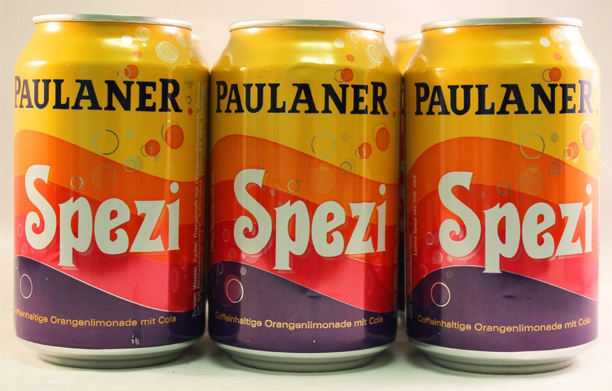
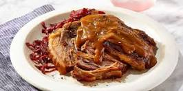
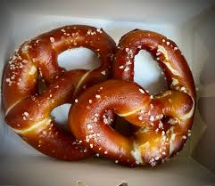
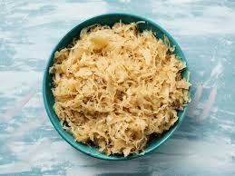
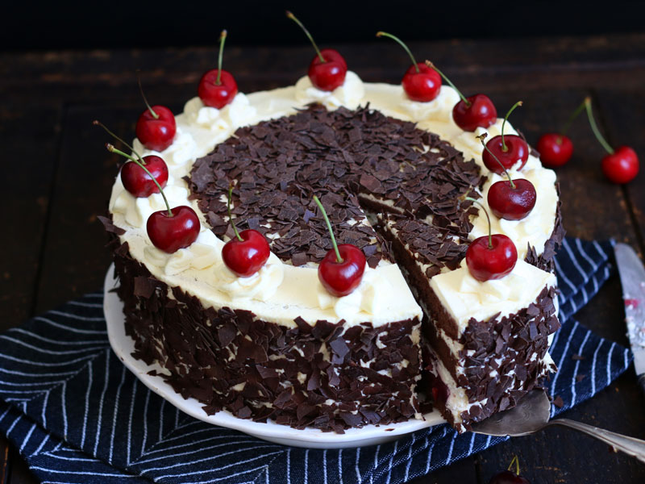
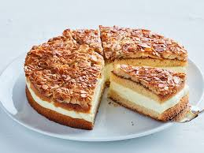
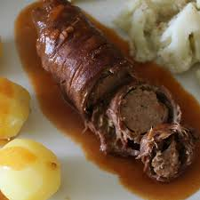
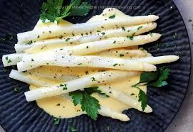
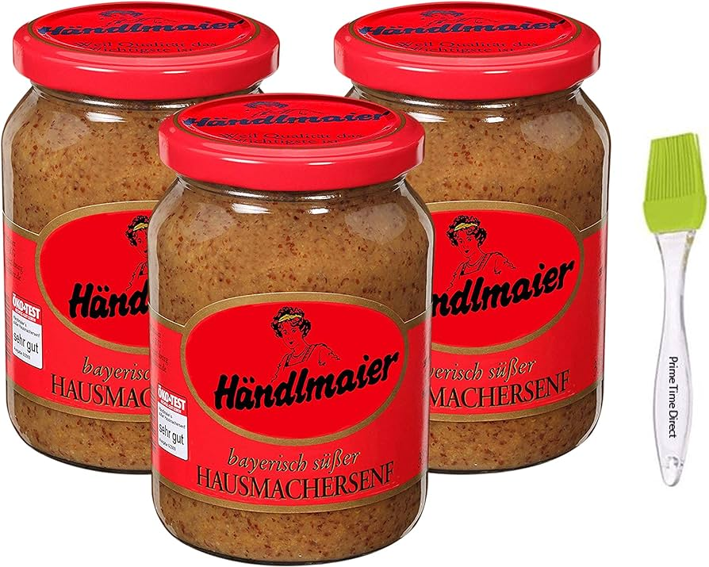

Eine beliebte deutsche Fast-Food-Gericht besteht aus gedämpfter, dann gebratener Schweinswurst, die typischerweise mit Curryketchup gewürzt und mit Pommes serviert wird.

Ein türkisch inspiriertes Fast-Food-Gericht, das in Deutschland beliebt geworden ist und aus gewürztem Fleisch besteht, das an einem vertikalen Grillspieß gekocht und in einem Fladenbrot oder Pita mit Gemüse und Saucen serviert wird.

Ein beliebtes Erfrischungsgetränk in Deutschland, das eine Mischung aus Cola und Orangenlimonade ist.
Ein traditionelles deutsches Schmorgericht, das typischerweise aus Rindfleisch besteht das vor dem Kochen in einer Mischung aus Essig, Wasser und Gewürzen mariniert wird und oft mit Kartoffelklößen und Rotkohl serviert wird.
Ein klassisches deutsches Nudelgericht, das allein oder als Beilage zu einem Fleischgericht gegessen werden kann.

Ein deutsches Gebäck, das gedreht und gesalzen wird, um eine Knotenform zu bilden.
Ein säuerliches Gericht, für das roher Kohl verwendet wird, der mit Zucker fermentiert wurde, um seinen einzigartigen Geschmack zu erhalten.
Eine Sahnetorte mit Kirschfüllung, die von Schokoladenstückchen umgeben ist.
Der Bienenstich ist ein Kuchen, bei dem Honig und karamellisierte Mandeln verwendet werden, um den besonderen Geschmack zu erzeugen.
Eine Fleischpastete, bei der dünne Fleischscheiben mit Senf und Speck in ein Brötchen eingewickelt werden.
Spargel ist ein typisches Gericht, das viele Deutsche genießen, vor allem weißer Spargel.
In Deutschland gibt es viele verschiedene Senfsorten, manche scharf, manche süß, aber alle zeichnen sich dadurch aus, dass sie frisch sind und eher eine Paste darstellen.
